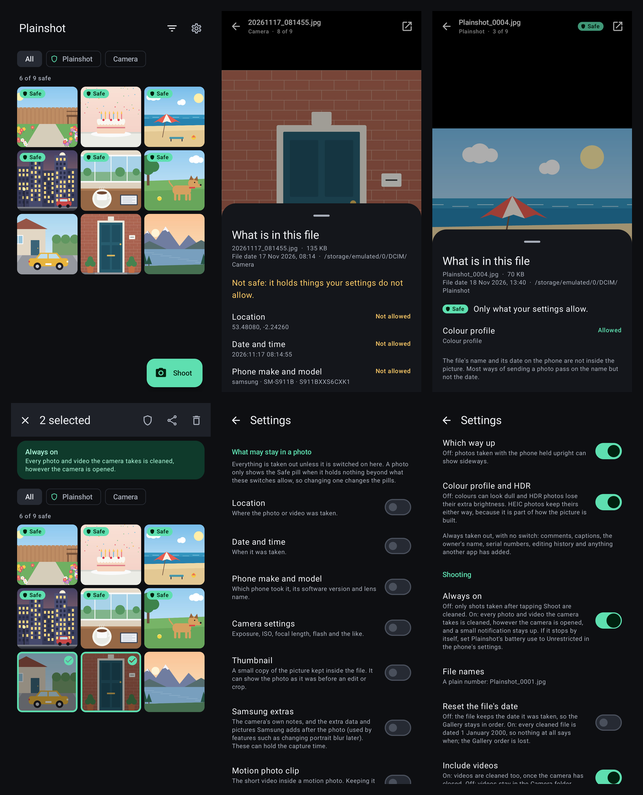

Take the photo. Leave everything else behind.
Every photo your phone takes carries hidden information: where you were, the date and time, which phone you have. Plainshot takes it out a few seconds after you press the shutter. Tap Shoot, use the phone's own camera with every mode it has, and what lands in your album is the picture and nothing else.
Download Plainshot Android 13 or newer · about 3 MB · what is new

What it does
Cleans as you shoot
Each photo is cleaned about three seconds after you take it and moved to its own Plainshot album. The original is deleted, so there is one copy and it is the clean one.
Your camera, untouched
Plainshot has no camera of its own. It opens the phone's full camera, so nothing about how your photos look changes.
The picture is never re-made
The information is taken out and the picture is copied across byte for byte. No quality is lost.
Everything off unless you say
Location, date and time, phone model, camera settings, thumbnail, Samsung's extras and the motion clip all go. Each has its own switch if you want it kept.
A gallery with a Safe pill
Every photo on the phone, with a small Safe pill on the ones that hold nothing beyond what your settings allow. The pill is earned: Plainshot opens the file and reads it.
Make safe
Select any photos on the phone and tap the shield. A clean copy goes into the Plainshot album and the original is left alone, unless you choose to replace it.
Share safe
In your phone's share menu from any app. Pick Share safe and a cleaned copy is what gets sent.
What is in this file
Open any photo and see, in plain words, what it carries: the place, the time, the phone.
Always on
A switch that cleans every photo the phone takes, however the camera was opened.
Names that say nothing
Samsung names photos by date and time. Plainshot's are Plainshot_0001, Plainshot_0002.
Photos and videos
JPEG, HEIC, PNG and WebP photos, and MP4 and MOV videos.
One tap from anywhere
A quick-settings tile and a home-screen shortcut. Plus a 30-day bin for anything you delete.
No internet access
Plainshot does not ask Android for the internet permission. It cannot send or fetch anything, and you can check that yourself: Settings, Apps, Plainshot, Permissions. The only cost is that the app cannot tell you about updates, so look at the releases page now and then.
What it will not do
- It does not change what the camera saw. A street sign, a face or a reflection in the picture is still in the picture.
- It cannot beat an instant upload. The camera saves each shot with its information and Plainshot cleans it about three seconds later. If a cloud backup uploads your Camera folder the instant a photo is saved, it could take the original first.
- RAW files are left alone. They stay where the camera put them and never get the Safe pill.
- HEIC photos keep their rotation and colour. In a HEIC file those are part of how the picture is built.
Installing
- Tap Download and open the file. Android will ask you to allow installs from your browser or file app.
- Play Protect may ask about an app it has not seen. Plainshot asks for access to all files because cleaning photos in the Camera folder needs it.
- Open Plainshot and switch on the three things it asks for: All files access, Usage access and Notifications.
- Usage access is locked at first, because the app came from a download and not the Play Store. Try to switch Plainshot on once, so your phone shows "Restricted setting". Then open Settings, Apps, Plainshot, tap the three dots at the top right and choose Allow restricted settings. The app shows these steps too.